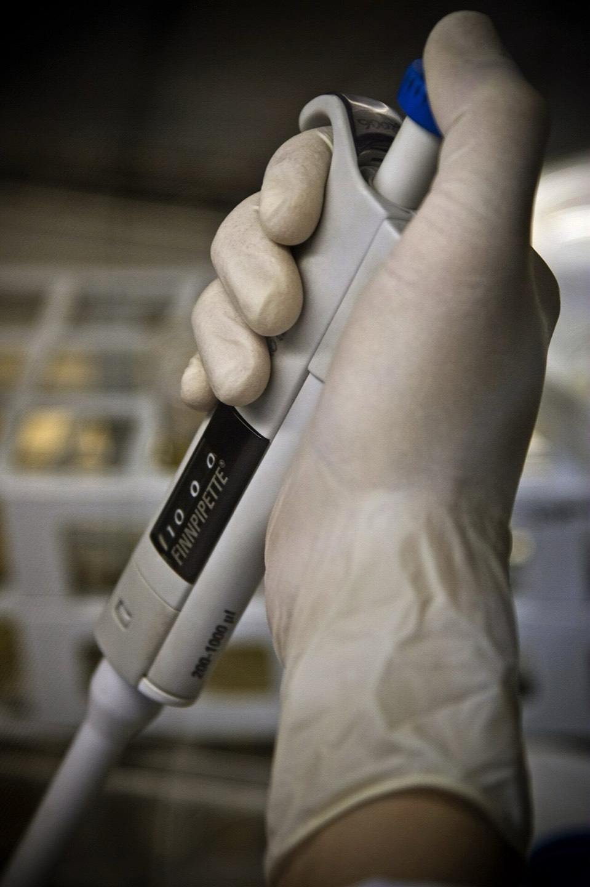

Who changed the anneal step?
Benchmark records who changed a protocol, when, and why.
PCR, 30 cycles
v5
Protocols, molecular
| Step | Temperature | Time |
|---|---|---|
| 1Initial denaturation | 95 °C | 3 min |
| 2Denature | 95 °C | 30 s |
| 3Anneal | 30 s | |
| 4Extend | 72 °C | 1 min |
| 5Final extension | 72 °C | 5 min |
- Who
- Person Scientist
- When
- System 2026-10-09 09:41:07
- Why
- “Primer dimers at 58 °C.”
- Version
- v4 to v5
What did it say before?
Every version is kept. Read any two side by side.
- v121 Aug
- v23 Sep
- v318 Sep
- v42 Oct
- v59 Oct
| Step | v3 Lab manager | v5 Scientist |
|---|---|---|
| 1Initial denaturation | 95 °C, 3 min | 95 °C, 3 min |
| 2Denature | 95 °C, 30 s | 95 °C, 30 s |
| 3Anneal | 60 °C, 30 s | |
| 4Extend | 72 °C, | 72 °C, 1 min |
| 5Final extension | 72 °C, 5 min | 72 °C, 5 min |
- v4Scientist2 Oct
Extension to 1 min.
- v5Scientist9 Oct
Primer dimers at 58 °C.
Which protocols changed this week?
Every protocol that moved in the lab, newest first.

This week in the lab4 changes
qPCR, standard curvev6
“Dilution series to 1:10, five points.”
Western blot transferv8
“Bands smeared at 100 V.”
Cell passagev12
“Confluent a day early, split at 80%.”
Plasmid miniprepv3
“Elute in 30 µl, not 50.”
Who writes the record?
A person writes the why. The system writes the when.
| Part | Written by | On the blot change |
|---|---|---|
| What changed | System | |
| Who | Person | Lab manager |
| When | System | 2026-10-08 16:05:12 |
| Why | Person | “Bands smeared at 100 V.” |
| Version | System | v7 to v8 |
Change the anneal yourself.
Say why. Nothing leaves this page.
The record, as it would be saved
60 °C 62 °C
- Who
- Person You
- When
- System on saving
- Why
- “Faint bands at 60 °C.”
- Version
- v5 to v6
Every change keeps its reason.
Bring Benchmark to your lab.
For research labs. Leave a work email and the name of your lab.